PRO VS MINI

Behringer PRO VS Mini
Web-based MIDI editor for the Behringer PRO VS MINI synthesizer.
Launch Editor
JT MINI

Behringer JT Mini
MIDI editor for the Behringer JT MINI synthesizer.
Launch Editor
CZ1

Behringer CZ1
MIDI editor for the Behringer CZ1 mini synthesizer.
Launch Editor
UB-1

Behringer UB-1
MIDI editor for the Behringer UB-1 synthesizer.
Launch Editor
JT4000M

Behringer JT4000M
MIDI editor for the Behringer JT4000M synthesizer.
Launch Editor